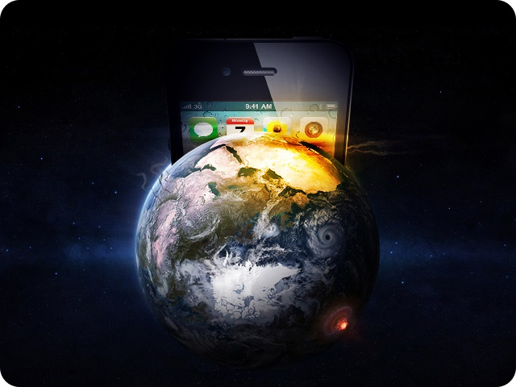

Five years ago, when I wrote my first "Hello World", an endless number of ideas covered my mind; How was it possible that I could be telling a computer what I wanted it to do? In fact, the whole context behind writing code turns out to be fascinating.
Many years passed, as well as many great scientists intervened in what we know today as a computer. Surely you've heard about the punch cards that allowed the big machines to read and process information or maybe the labs and the huge computers that allowed man to reach the moon. This is probably incomprehensible for the new generations (including me) because nowadays it is not necessary to be a scientist or engineer to manipulate computers, in fact a large part of the world population is in contact with daily computing and the reason it's something that information technology experts have called; "Mobile computing".
Mobile computing
The mobile telephony of today is very different from the one that abounded ten or twenty years ago. Sophisticated telephones with a great technological development in their interior is what we have access today. The "smartphones" that we use today have received that name because they seem to have a behavior similar to that of a human even able to suggest ideas and collect large amounts of information.
On the other hand, this technology has been called "mobile computing" due to the more primitive computer concept: "A machine capable of performing many operations at a high speed". The above, has to do in a big way because the mobile phone has: .
- OS
- Sensors
- Processor
- Memory
- Camera
- Antenna
Among other artifacts which make the phone a powerful computer.
Ubiquitous computing
Such has been the user impact using the mobile technology that has emerged among the scientific community the term: "Ubiquitous computing" which aims to explain how computing is a concept that today is always present in the life of man, not differentiating it from other objects with which we live every day.
Such has been the user impact using the mobile technology that has emerged among the scientific community the term: "Ubiquitous computing" which aims to explain how computing is a concept that today is always present in the life of man, not differentiating it from other objects with which we live every day.
Forty or thirty years ago, a computer was an object which we differentiated from the rest and whose use was for a specific purpose. However, today computing has become part of our daily life with endless uses and applications, including the "smartwatch" and other technologies which complement our outfit and give us access to technology as we never would have imagined.
 Mobile computing; access to our world.Finally, mobile computing is a very powerful tool which will surely be present and evolve in different gadgets which will not only seek to make life easier with endless applications, but will also be part of our personality and an indispensable artifact..
References: